Cuadro 1184
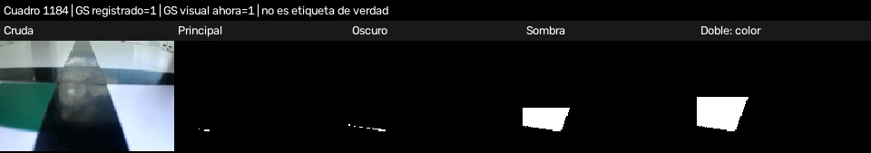
Ejemplos de tus grabaciones. Cada fila muestra cruda, principal, oscuro, sombra y color del doble. GS registrado es el dato del registro, no una etiqueta visual correcta. GS visual no reproduce tiempos ni maniobras. Las mascaras ampliadas pueden contener mas ruido: hay que revisar la geometria.
Estos ejemplos sirven para practicar; no reemplazan las luces reales de competencia.

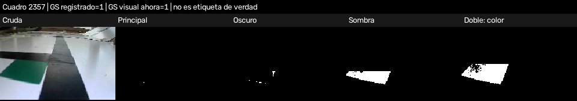
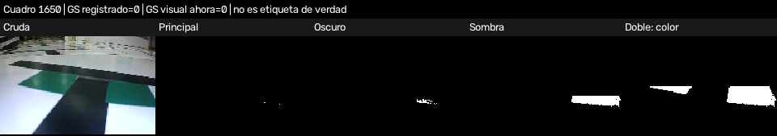
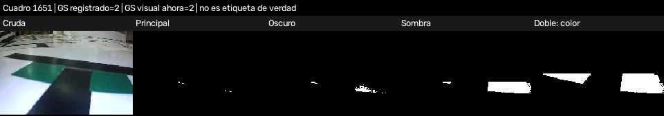
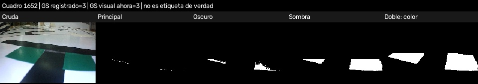
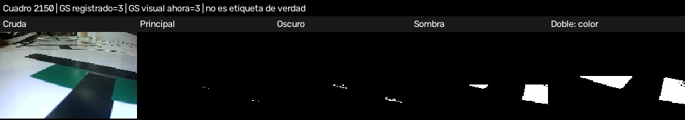
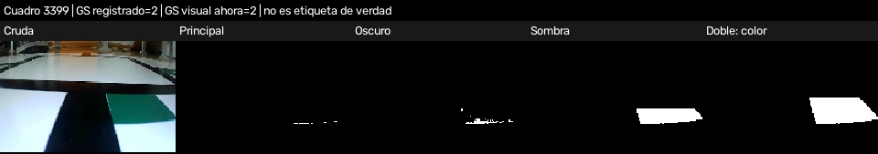
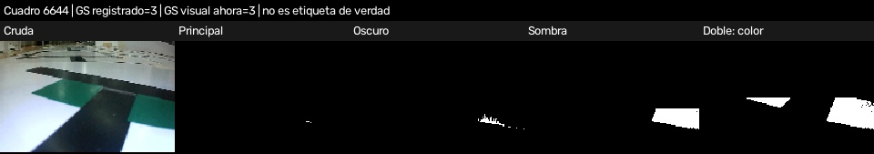
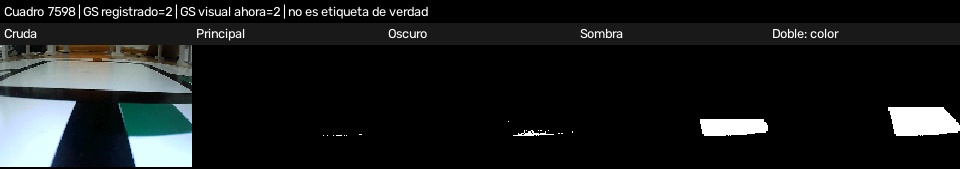
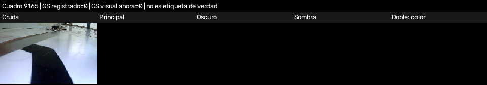
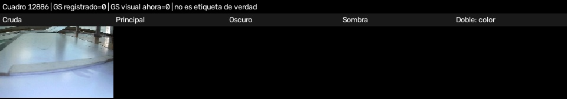
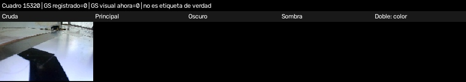